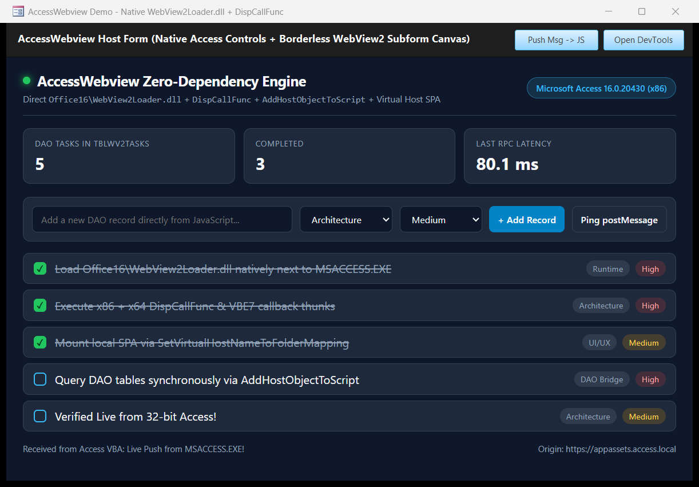

AccessWebview is a self-contained, 32-bit (x86) and 64-bit (x64) Microsoft Access VBA WebView2 framework adapted from tarboh/WebView2-For-Excel-VBA (v0.5.2). It drives the native WebView2Loader.dll shipped inside Microsoft Office\root\Office16\ alongside MSACCESS.EXE using oleaut32!DispCallFunc, SAFEARRAY pointer primitives, and dual-architecture (x86 / x64) VBE7.DLL-guarded machine-code callback thunks.
It requires zero COM/ActiveX registration, zero VBA Tools -> References beyond standard Access defaults, zero admin privileges, and zero MSysResources Trusted Domains configuration—unlocking direct chrome.webview.hostObjects DAO RPC, event-driven postMessage, SetVirtualHostNameToFolderMapping local SPA hosting, F12 DevTools, Playwright-style DOM automation, and HTTP request/response capture inside Microsoft Access forms.

Wv2Thunks & ComCallbackHandler)modWv2AccessHost & frmWv2Surface)Wv2Environment & Wv2Pane)Wv2Element & Wv2Pane D-Axis)Wv2Pane N-Axis)Wv2Browser, SafeTimer, LibTimers)x86) vs. 64-Bit (x64) ABI & Edge-Case GuaranteesAccessWebview vs. Native Access EdgeBrowserControlWv2Log), Testing & Troubleshooting| File / Folder | Purpose |
|---|---|
./AccessWebview.accdb |
Reference host database (compiled & verified in 32-bit MSACCESS.EXE 16.0.20430.20180; compatible with 64-bit Access) |
./spa/index.html |
Sample dark-mode SPA mounted at https://appassets.access.local/index.html demonstrating hostObjects.vba DAO CRUD + bidirectional postMessage |
./src/ |
Exported 7-bit ASCII VBA source for all 16 modules, classes, and Access forms (managed via XLIDE) |
./AccessWebview-Live-Verified.png |
Live screenshot of frmWv2Demo running in 32-bit Microsoft Access |
./README.md / ./README.html |
Developer documentation (Markdown & standalone HTML) |
src/)Depending on whether you are building a single-pane Access SPA or a multi-tab automation browser, you can import either the Lean SPA Core (9 objects) or the Full Suite (16 objects):
| Module / Form | Type | Tier | Lines | Responsibility |
|---|---|---|---|---|
Wv2Thunks.bas |
Standard | Core | 2,716 | WebView2Loader.dll declaration, DispCallFunc (dcf), VirtualAlloc 512-slot callback pool, x86/x64 machine-code thunks, IID table, SAFEARRAY memory primitives, and VBE Reset Sentinel |
ComCallbackHandler.cls |
Class | Core | 166 | Receives all 13 HandlerKind COM callbacks at fixed vtable slot 7 (Handler_Invoke) and routes them to owner classes |
Wv2Environment.cls |
Class | Core | 255 | Asynchronous ICoreWebView2Environment bootstrapper and COM pointer lifetime wrapper |
Wv2Pane.cls |
Class | Core | 7,998 | ICoreWebView2Controller + ICoreWebView2 / _2 / _3 wrapper, EvalSync, DOM queries, quiescence probes, and network capture |
Wv2Element.cls |
Class | Core | 489 | Generation-checked DOM element handle (InnerText, InnerHTML, Value, Click, GetAttribute, SetAttribute) |
Wv2Json.bas |
Standard | Core | 373 | Pure-VBA JSON escaping, unescaping (including UTF-16 surrogate pairs), and lightweight key extraction |
Wv2Log.bas |
Standard | Core | 514 | Sequenced UTF-8 file logger (%APPDATA%\Wv2Browser\logs) with automatic log rotation |
modWv2AccessHost.bas |
Standard | Core | 259 | Access OFormSub Detail HWND resolver (GetAccessFormCanvasHwnd), folder helpers, and 3-step self-test suite |
Form_frmWv2Surface.cls |
Form | Core | 143 | Reusable borderless Access Subform canvas (InitSpa, ResizeViewport, ShutdownWebView, WebMessageReceived sink) |
clsWv2AccessBridge.cls |
Class | App | 152 | Example DAO RPC bridge exposed to JavaScript as window.chrome.webview.hostObjects.vba |
Form_frmWv2Demo.cls |
Form | App | 106 | Example Access host form combining native Access header controls with frmWv2Surface |
Wv2Browser.cls |
Class | Multi-Tab | 2,860 | Multi-tab controller, tab events, and put_NewWindow prewarmed popup tab delegation |
SafeTimer.cls |
Class | Multi-Tab | 90 | Break-safe Win32 timer backed by a message-only window (HWND_MESSAGE = -3) for deferred async actions outside WebView2 callbacks |
LibTimers.bas |
Standard | Multi-Tab | 127 | x86 + x64 VBE7 EntryPoint timer callback thunk for SafeTimer |
Wv2Url.bas |
Standard | Multi-Tab | 155 | UTF-8 percent-encoding (UrlEncodeComponent) and URL scheme helpers |
Wv2SettingsBridge.cls |
Class | Multi-Tab | 654 | Search-engine preset persistence helper used by Wv2Browser |
32-bit x86 or 64-bit x64).WebView2Loader.dll: Automatically resolved from Microsoft Office\root\Office16\WebView2Loader.dll (installed right beside MSACCESS.EXE, so Windows loads the exact matching x86 or x64 binary first under standard DLL search order).C:\Program Files (x86)\Microsoft\EdgeWebView\Application).Zero External References: Only the standard built-in Access VBA references (
VBA,Access,stdole, andDAOif your bridge queries tables) are needed. Do not add references toMicrosoft Internet Controls,Microsoft HTML Object Library, or any.tlb/.dll.
.accdb ApplicationWv2Thunks, ComCallbackHandler, Wv2Environment, Wv2Pane, Wv2Element, Wv2Json, Wv2Log, modWv2AccessHost, and the reusable form frmWv2Surface from AccessWebview.accdb into your front-end .accdb (External Data -> New Data Source -> From Database -> Access).frmWv2Surface onto Your Host Form:
subWebView with SourceObject = "frmWv2Surface", BorderStyle = Transparent (0).HorizontalAnchor = Both and VerticalAnchor = Both—or resize Me.subWebView explicitly in Form_Resize (recommended for pixel-tight full-bleed layouts).clsAppBridge) with Public Function / Public Sub methods. Every VBA class automatically implements IDispatch, so WebView2 exposes its Public members directly to JavaScript when passed to InitSpa or View_AddHostObjectToScript.Alt+F11), click Debug -> Compile <ProjectName> and save. Compiling ensures all standard-module AddressOf function pointers (Handler_QueryInterface, Handler_AddRef, Handler_Release, EntryPoint) are materialized before Win32 APIs invoke them.frmWv2Surface)Place your index.html, .js, and .css assets in a local folder (e.g., CurrentProject.Path & "\spa"). Inside your Access host form:
Option Compare Database
Option Explicit
Private m_bridge As clsWv2AccessBridge
Private Sub Form_Load()
Set m_bridge = New clsWv2AccessBridge
Dim surf As Form_frmWv2Surface
Set surf = Me.subWebView.Form
' Mounts folder at https://appassets.access.local/index.html and attaches m_bridge as hostObjects.vba
If Not surf.InitSpa( _
virtualHostName:="appassets.access.local", _
localFolderPath:=CurrentProject.Path & "\spa", _
entryFile:="index.html", _
hostObject:=m_bridge, _
hostObjectName:="vba") Then
MsgBox "WebView2 failed to initialize.", vbExclamation
End If
End Sub
Private Sub Form_Resize()
On Error Resume Next
Me.subWebView.Move 0, 0, Me.InsideWidth, Me.InsideHeight - Me.FormHeader.Height
Me.subWebView.Form.ResizeViewport
On Error GoTo 0
End Sub
Private Sub Form_Unload(Cancel As Integer)
On Error Resume Next
Me.subWebView.Form.ShutdownWebView
Set m_bridge = Nothing
On Error GoTo 0
End Sub
Inside your JavaScript (spa/index.html):
// Asynchronous call (non-blocking Promise — preferred for UI responsiveness)
const tasksJson = await window.chrome.webview.hostObjects.vba.GetTasksJson();
const tasks = JSON.parse(tasksJson);
// Synchronous call (blocks JS until VBA returns)
const hostJson = window.chrome.webview.hostObjects.sync.vba.GetHostInfoJson();
View_NavigateToString — Zero External Files)When you want to render charts, Markdown previews, or interactive cards from HTML generated purely in VBA without writing files to disk:
Public Sub LoadInlineHtmlCard(ByVal surf As Form_frmWv2Surface)
Dim env As New Wv2Environment
env.Init GetDefaultUserDataFolder()
Do While Not env.IsReady And Not env.IsFailed: DoEvents: Loop
Dim pane As New Wv2Pane
pane.Init env, GetAccessFormCanvasHwnd(surf)
Do While Not pane.IsReady And Not pane.IsFailed: DoEvents: Loop
pane.Ctrl_GetCoreWebView2
pane.View_AddNavigationCompleted
pane.View_AddWebMessageReceived
Dim rc As RECT
GetClientRect GetAccessFormCanvasHwnd(surf), rc
pane.Ctrl_PutBounds rc
pane.Ctrl_PutIsVisible True
pane.View_NavigateToString _
"<!doctype html><html><body style='font-family:Segoe UI;padding:20px'>" & _
"<h2>Inline Access Report</h2>" & _
"<button onclick=""chrome.webview.postMessage('export-clicked')"">Export</button>" & _
"</body></html>"
End Sub
Note:
View_NavigateToStringhas anabout:blankorigin and a ~2 MB string limit. Whenever your app uses ES modules (<script type="module">),fetch()to local assets,localStorage, orhistory.pushStaterouting, useInitSpa/View3_SetVirtualHostNameToFolderMappinginstead so your app runs under a genuine securehttps://origin.
Wv2Element + WaitSettled)Public Sub AutomatePortalSearch(ByVal p As Wv2Pane, ByVal queryText As String)
p.View_Navigate "https://example.org"
' 1. Wait up to 10s for an input element to appear in the DOM
Dim searchBox As Wv2Element
Set searchBox = p.WaitFor("#search-input", 10)
If searchBox Is Nothing Then Exit Sub
' 2. Arm a network or URL signal BEFORE triggering the UI action
p.ArmNetworkSignal "/api/search"
' 3. Assign .value (uses native HTMLInputElement prototype setter so React/Vue state updates!)
searchBox.value = queryText
p.QuerySelector("#submit-btn").Click
' 4. Wait until in-flight fetch/XHR + DOM mutations settle
If p.WaitSettled(timeoutSec:=15, quietMs:=400) Then
Dim rows As Collection
Set rows = p.QuerySelectorAll(".result-item")
Dim item As Wv2Element
For Each item In rows
Debug.Print item.InnerText
Next item
End If
End Sub
AccessWebview is structured in five strict layers so low-level pointer/thunk mechanics never leak into form or business logic:
+----------------------------------------------------------------------------------------+
| Layer 5: Access Application & UI Layer |
| frmWv2Demo (Host Form) | clsWv2AccessBridge (DAO / Business Logic via IDispatch) |
+----------------------------------------------------------------------------------------+
| Layer 4: Reusable Access Host Surface |
| frmWv2Surface (Borderless Subform) | modWv2AccessHost (OFormSub HWND & Test Suite) |
+----------------------------------------------------------------------------------------+
| Layer 3: High-Level Browser, DOM & Network Abstractions |
| Wv2Element (DOM Handle) | Wv2Browser (Multi-Tab + Prewarm) | Wv2Json / Wv2Log |
+----------------------------------------------------------------------------------------+
| Layer 2: Core WebView2 COM Wrappers |
| Wv2Environment (ICoreWebView2Environment) |
| Wv2Pane (ICoreWebView2Controller + ICoreWebView2 / _2 / _3 + IStream + Headers) |
+----------------------------------------------------------------------------------------+
| Layer 1: Zero-Reference COM Dispatch & Dual-Bitness Callback Thunk Pool |
| Wv2Thunks.bas (DispCallFunc, SAFEARRAY PointerAccessor, VirtualAlloc 512-Slot Pool, |
| VBE7 EbMode Stub + x86/x64 Machine-Code Thunks, Reset Sentinel) |
| ComCallbackHandler.cls (Fixed Slot-7 Handler_Invoke Router for 13 HandlerKinds) |
+----------------------------------------------------------------------------------------+
| Native OS / Office Binaries (Pre-Installed — Zero Registration) |
| Office16\WebView2Loader.dll --> EdgeWebView\...\EmbeddedBrowserWebView.dll |
+----------------------------------------------------------------------------------------+
Wv2Thunks & ComCallbackHandler)dcf (DispCallFunc)WebView2 exposes pure C++ IUnknown-derived vtable interfaces (ICoreWebView2, ICoreWebView2Controller, etc.) rather than late-bound IDispatch interfaces, and its type library is not registered in the Windows Registry. Wv2Thunks.dcf invokes any COM method directly by 0-based vtable index (0 = QueryInterface, 1 = AddRef, 2 = Release, 3+ = interface methods):
Public Function dcf( _
ByVal pInterface As LongPtr, _
ByVal vtblIndex As Long, _
ByVal funcName As String, _
ParamArray args() As Variant) As Long
Argument Marshaling Rules in dcf:
vbLong -> passed as 4-byte integer (VT_I4).vbDouble -> passed as 8-byte IEEE float (VT_R8).vbCurrency -> passed as 8-byte raw 64-bit integer value (VT_CY) on both x86 and x64 (used for EventRegistrationToken in remove_* calls and LARGE_INTEGER offsets in IStream::Seek).vbLongLong (on Win64) -> passed as 8-byte LongPtr (VT_I8).Else fallback -> vbLongLong on Win64, vbLong on 32-bit x86.[out] void**, [out] LPWSTR*): Pass VarPtr(localVar). Strings returned by WebView2 (LPWSTR*) are copied into a VBA BSTR via PtrToString and freed immediately via ole32!CoTaskMemFree (GetStringProperty handles all three steps automatically).dcf does not assume non-zero means failure, because IUnknown::AddRef and Release return ULONG reference counts (1, 2, ...) rather than HRESULTs. Callers check hr <> 0 on HRESULT-returning methods.VirtualAlloc + VBE7 EbMode Gate + Machine-Code Thunk)Every asynchronous WebView2 operation (CreateCoreWebView2EnvironmentWithOptions, CreateCoreWebView2Controller, ExecuteScript, GetContent, and all 9 browser events) requires the host to supply a custom COM callback object whose vtable is:
Slot 0: QueryInterface(this, riid, ppvObject)Slot 1: AddRef(this)Slot 2: Release(this)Slot 3: Invoke(this, arg1, arg2)Because a VBA class module's vtable places IDispatch in slots 3..6, puts its first user method at slot 7, expects ObjPtr(instance) as hidden arg0, and returns Function results through a hidden trailing HRESULT* out-parameter, Wv2Thunks.Thunks_Init allocates a single 114,752-byte PAGE_EXECUTE_READWRITE region containing a 64-byte header (byte 0 = pool alive flag) plus 512 reusable 224-byte callback slots:
Slot Layout (224 bytes per slot; pVTableObj = pSlot + 176 passed to WebView2 as `this`):
+0..+90 : Cloned VBE7 EntryPoint stub (checks VBE7!EbMode; skips call in VBE Break mode!)
* x64: 91 bytes, jump target patched at +55 (LATE_BIND_OFFSET = 55)
* x86: 33 bytes, jump target patched at +22 (LATE_BIND_OFFSET = 22),
Break-mode epilogue at +28 patched from `C2 00 00` -> `C2 0C 00`!
+96..+169 : Per-slot Machine-Code Thunk
* Checks [pRegionBase] == 1 (returns S_OK = 0 immediately if Shutdown/Reset occurred)
* Shifts (this, arg1, arg2), injects ObjPtr(ComCallbackHandler), allocates retval,
and calls ComCallbackHandler.Handler_Invoke (vtable slot 7)
+176..+215 : Embedded COM Object + VTable (`VTABLE_OBJ_OFFSET = 176`)
* +176 : pVTable -> points to +184
* +184 + 0*Ptr : AddressOf Handler_QueryInterface (checks IID_IUnknown + m_iidTable(kind))
* +184 + 1*Ptr : AddressOf Handler_AddRef (increments ComCallbackHandler.RefCount)
* +184 + 2*Ptr : AddressOf Handler_Release (at RefCount=0, breaks owner cycle & frees slot)
* +184 + 3*Ptr : pSlot (Invoke -> VBE7 stub -> Machine-Code Thunk)
Invariant on
ComCallbackHandler.cls:Public Function Handler_Invoke(...)must remain the very first procedure/property inComCallbackHandler.cls(above allFriendproperties/subs) so its vtable index is guaranteed to be slot 7 on both 32-bit and 64-bit VBA.
CopyMemory SAFEARRAY Primitives & VBE Reset SentinelPointerAccessor (MemLongPtr / ReadLongPtr): Instead of calling kernel32!RtlMoveMemory on every pointer read/write (which triggers P/Invoke overhead and Err.LastDllError side effects), Wv2Thunks overlays a 1-element SAFEARRAY_1D (FADF_AUTO Or FADF_FIXEDSIZE) onto a typed LongPtr() array for native memory speed.WV2_VBA_LastRegion): Pressing the VBE Reset (Stop) button wipes all VBA module variables (m_pRegionBase = 0) without firing Form_Unload, leaving the VirtualAlloc region orphaned in MSACCESS.EXE. Thunks_Init stores m_pRegionBase in process environment variable WV2_VBA_LastRegion. On the next initialization after a VBE Reset, Sentinel_RecoverIfNeeded inspects the address via VirtualQuery (MEM_COMMIT + matching AllocationBase + read/write protection), zeroes the alive byte at +0 so any stray WebView2 callback safely returns S_OK, and frees the previous block with VirtualFree(..., MEM_RELEASE).modWv2AccessHost & frmWv2Surface)GetAccessFormCanvasHwnd Exists (The 3-OFormSub Z-Order Rule)In Excel, MSForms UserForms host WebView2 inside a Frame control (Frame1.[_GethWnd]). In Microsoft Access, native controls (Rectangle, TextBox, CommandButton, TabControl) are windowless and have no HWND. Only Forms (OForm / OFormPopup) and Subforms (OFormChild) own real Win32 windows.
Crucially, inspecting the live Win32 window hierarchy of an Access form reveals that Access always creates three OFormSub child windows under every Form.hwnd in fixed Z-order:
OFormPopup / OFormChild (frm.hwnd)
├── 1st OFormSub : FormHeader <-- Height is 0 px when the form has no header!
├── 2nd OFormSub : Detail <-- Actual form body canvas (e.g., 944 x 544 px)
└── 3rd OFormSub : FormFooter <-- Height is 0 px when the form has no footer!
If code naively calls FindWindowExW(frm.hwnd, 0, StrPtr("OFormSub"), 0) on a headerless subform like frmWv2Surface, Windows returns the 1st OFormSub (FormHeader, height = 0 px). WebView2 initializes without error, executes JavaScript, and passes DOM queries—while clipping Chrome_WidgetWin_0 inside a 0 px-tall strip!
modWv2AccessHost.GetAccessFormCanvasHwnd(frm) solves this permanently by iterating all OFormSub children of frm.hwnd, measuring GetClientRect, and selecting the Detail OFormSub canvas.
frmWv2Surface.Width Small in Design View (1440 twips = 1 inch):Width is wider than the Subform control (subWebView) on a parent form, Access sets the inner OFormChild width to Max(subWebView.Width, frmWv2Surface.Width), clipping the right edge of the web page. Keeping frmWv2Surface.Width = 1440 and Detail.Height = 1440 lets frmWv2Surface shrink or expand to any container size cleanly.InsideWidth, InsideHeight, Left, Top) is measured in Twips (1440 twips/inch), whereas ICoreWebView2Controller::put_Bounds expects physical client pixels (RECT). frmWv2Surface.ResizeViewport calls Win32 GetClientRect(targetHwnd, rc) directly on the Detail OFormSub HWND, obtaining exact (0, 0, widthPx, heightPx) coordinates across 100%, 125%, 150%, and Per-Monitor DPI v2 displays with zero rounding drift.Form_Unload & Design View Switches)Unlike Excel UserForms, Access users and developers can switch an open form directly from Form View -> Design View. Always call ShutdownWebView inside Form_Unload:
Public Sub ShutdownWebView()
On Error Resume Next
If Not m_pane Is Nothing Then
m_pane.Ctrl_Close ' Unregisters persistent handlers & closes ICoreWebView2Controller
Set m_pane = Nothing ' Releases ICoreWebView2_3 -> _2 -> ICoreWebView2 -> Controller
End If
Set m_bridge = Nothing
Set m_env = Nothing ' Releases ICoreWebView2Environment
On Error GoTo 0
End Sub
Child-before-parent COM release order (View3 -> View2 -> View -> Controller -> Environment) is enforced inside Wv2Pane.Class_Terminate and Wv2Environment.Class_Terminate.
Wv2Environment & Wv2Pane)Wv2Environment (src/Wv2Environment.cls)| Member | Signature | Description |
|---|---|---|
Init |
Sub Init(ByVal userDataPath As String) |
Calls CreateCoreWebView2EnvironmentWithOptions asynchronously. Creates userDataPath recursively if missing (defaults to C:\Temp\VBA_WebView2; modWv2AccessHost.GetDefaultUserDataFolder() returns %LOCALAPPDATA%\AccessWebview\UserData). |
IsReady / IsFailed |
Property Get () As Boolean |
Poll with DoEvents until IsReady or IsFailed becomes True. |
LastError |
Property Get () As Long |
HRESULT if initialization failed (0 = S_OK). |
EnvironmentPtr |
Property Get () As LongPtr |
Raw ICoreWebView2Environment* COM interface pointer. |
Wv2Pane — Lifecycle, Navigation & Settings (src/Wv2Pane.cls)| Category | Method / Property | Description |
|---|---|---|
| Controller | Init(env, hwnd) |
Asynchronously creates ICoreWebView2Controller parented to hwnd. |
IsReady / IsFailed / LastError |
Readiness state of controller creation. | |
Ctrl_GetCoreWebView2() As Long |
Populates internal m_pView (ICoreWebView2*); call once immediately after IsReady = True. |
|
Ctrl_PutBounds(bounds As RECT) As Long |
Resizes browser viewport in parent client pixels (x86 4-Long stack ABI & x64 pointer ABI handled automatically). |
|
Ctrl_PutIsVisible(visible As Boolean) As Long |
Shows or hides the controller viewport (True normalized to Win32 BOOL = 1). |
|
Ctrl_Close() As Long |
Closes controller, zeroes persistent tokens, and prevents further script calls. | |
| Navigation | View_Navigate(url As String) As Long |
Navigates to an https://, http://, file:///, or virtual-host URL. |
View_NavigateToString(htmlContent As String) As Long |
Renders an in-memory HTML string directly (about:blank origin). |
|
View3_SetVirtualHostNameToFolderMapping(hostName, folderPath, accessKind) As Long |
Maps https://<hostName>/ to a local folder (0 = DENY, 1 = ALLOW, 2 = DENY_CORS). Always navigate to an explicit file (e.g., index.html), as root / returns ACCESS_DENIED. |
|
View_Reload() / View_Stop() |
Reloads current page or cancels in-progress navigation. | |
View_GoBack() / View_GoForward() |
Navigates session history (View_GetCanGoBack / View_GetCanGoForward check availability). |
|
View_GetSource() / View_GetDocumentTitle() |
Returns current URL or <title> string. |
|
| Settings & DevTools | Settings_PutAreDevToolsEnabled(v As Boolean) As Long |
Enables or disables F12 / programmatic DevTools. |
View_OpenDevToolsWindow() As Long |
Opens the Chromium DevTools inspector window (ICoreWebView2 vtable 51). |
|
Settings_PutAreDefaultContextMenusEnabled(v As Boolean) As Long |
Enables or suppresses the right-click browser context menu (set False for locked-down production Access apps). |
|
Settings_PutIsScriptEnabled(v As Boolean) As Long |
Enables or disables JavaScript execution on subsequent navigations. | |
| Events | View_AddNavigationStarting / View_AddNavigationCompleted |
Subscribes to navigation lifecycle (IsPageLoaded tracks completion). |
View_AddDocumentTitleChanged / View_AddHistoryChanged |
Tracks <title> updates and SPA pushState / replaceState / popstate URL transitions. |
|
View2_AddDOMContentLoaded |
Subscribes to ICoreWebView2_2::DOMContentLoaded (fires before external images/subresources finish). |
|
View_AddWebMessageReceived |
Enables Public Event WebMessageReceived(messageText, messageJson) and optional SetWebMsgSink forwarding. |
|
View_AddNewWindowRequested |
Intercepts window.open / target="_blank" links (Wv2Browser routes them into prewarmed tabs, preserving POST bodies and headers). |
AccessWebview supports three complementary communication channels between JavaScript and Access VBA:
AddHostObjectToScript) — Recommended for SPA CRUDRegister any VBA class instance before calling View_Navigate / View_NavigateToString:
Set m_bridge = New clsWv2AccessBridge
m_pane.View_AddHostObjectToScript "vba", m_bridge
JavaScript can invoke any Public Function, Public Sub, or Public Property on clsWv2AccessBridge:
// 1. Async Proxy (Recommended — returns a Promise without freezing UI animations)
const updatedJson = await window.chrome.webview.hostObjects.vba.AddTask("Audit Q4", "Finance", "High");
// 2. Sync Proxy (Blocks JS until VBA returns; avoid calling EvalSync back into the same pane!)
const pong = window.chrome.webview.hostObjects.sync.vba.Ping("Hello");
DAO Performance Best Practice in Split Access Databases:
When your Access front-end links to a shared network back-end.accdb, keep a persistent back-endDAO.Databasehandle open in your data service (clsDb/OpenDatabase(backEndPath)) and run SQL /OpenRecordsetagainst that back-end handle inside your bridge methods rather thanCurrentDblinked tables. Combined withhostObjects.vba, DAO reads/writes complete in < 10–80 ms with zero timer-polling latency.
postMessage <-> WebMessageReceived)Ideal for fire-and-forget notifications, streaming progress updates, or decoupled command buses:
VBA -> JS (View_PostWebMessageAsString):
m_pane.View_PostWebMessageAsString "{""event"":""recordSaved"",""id"":42}"
window.chrome.webview.addEventListener('message', (ev) => {
const msg = JSON.parse(ev.data);
console.log('Pushed from Access:', msg);
});
(Ensure the page has finished NavigationCompleted or sent a "ready" message first; messages sent before JS registers its listener are dropped by WebView2.)
JS -> VBA (window.chrome.webview.postMessage):
window.chrome.webview.postMessage(JSON.stringify({ cmd: 'openReport', name: 'rptInvoice' }));
Private WithEvents m_pane As Wv2Pane
Private Sub m_pane_WebMessageReceived(ByVal messageText As String, ByVal messageJson As String)
' messageText is populated when JS passes a String; messageJson is always populated as JSON!
Debug.Print "Received from JS: " & messageText
End Sub
EvalSync)Wv2Pane.EvalSync(jsExpr, Optional timeoutSec = 5) wraps jsExpr inside a try { ... } catch + JSON.stringify(...) envelope, dispatches ICoreWebView2::ExecuteScript, pumps DoEvents until HK_ExecuteScriptCompleted arrives for that callbackId, unescapes the returned JSON string (including < \u003C escapes and UTF-16 surrogate pairs), and sets LastEvalOk / LastEvalError:
Dim countStr As String
countStr = p.EvalSync("document.querySelectorAll('.task-row').length")
If p.LastEvalOk Then
Debug.Print "Rendered rows: " & CLng(countStr)
Else
Debug.Print "Eval failed: " & p.LastEvalError
End If
Critical Re-Entrancy Rule (
m_inCallbackGuard):
Never callEvalSync,WaitFor, orWv2Elementmethods synchronously inside aWebMessageReceivedorNavigationCompletedevent handler. WebView2 holds its callback thread untilHandler_Invokereturns, so blocking inside the handler forExecuteScriptCompletedwould deadlock.Wv2Panedetectsm_inCallback > 0and returns immediately withLastEvalError = "in-callback". If you need to runEvalSyncin response to an event, defer it by 10 ms viaSafeTimeror the Access form'sMe.TimerInterval = 10(Form_Timer).
Wv2Element & Wv2Pane D-Axis)Wv2Pane injects a self-healing element registry (window.__wv2Reg) tagged with a per-document generation token ('g' + Date.now() + '-' + Math.random()). VBA receives lightweight integer handles wrapped in Wv2Element instances—eliminating CSS/JS quote-escaping bugs and automatically detecting stale elements after page navigations.
Wv2Pane)| Method / Property | Return Type | Description |
|---|---|---|
GetElementById(elementId) |
Wv2Element |
Finds #elementId (waits up to ImplicitWaitSec if > 0; returns Nothing if absent). |
QuerySelector(selector) |
Wv2Element |
Finds first matching CSS selector (Nothing if not found; check LastEvalOk to distinguish "not found" from errors). |
QuerySelectorAll(selector, [maxCount=200]) |
Collection |
Returns a 1-based Collection of Wv2Element objects (never Nothing, even when Count = 0). |
WaitFor(selector, [timeoutSec=10]) |
Wv2Element |
Polls until selector exists in the DOM or timeoutSec expires. Note: WaitFor returns an object—check If p.WaitFor("#id", 10) Is Nothing Then! |
WaitGone(selector, [timeoutSec=10]) |
Boolean |
Polls until selector disappears from the DOM (ideal for loading spinners/overlays). |
ImplicitWaitSec |
Single |
Opt-in automatic wait duration (default 0) applied to QuerySelector and GetElementById. |
Wv2Element)| Member | Type | Description |
|---|---|---|
.TagName |
String (Get) |
Uppercase tag name (e.g., "INPUT", "BUTTON"). |
.InnerText / .InnerHTML |
String (Get) |
Reads rendered text or inner HTML markup. |
.value |
String (Get/Let) |
Reads or sets form control values. React/Vue-safe: invokes the native HTMLInputElement / HTMLTextAreaElement / HTMLSelectElement prototype value setter and dispatches bubbling input + change events. |
.Click() |
Boolean |
Calls .click() on the element (True if the element was still live in the current DOM generation). |
.GetAttribute(name) / .SetAttribute(name, val) |
String / Boolean |
Reads or updates HTML attributes. |
.IsStale |
Boolean (Get) |
True if the page navigated or the element was removed from the registry. |
.LastOk / .LastError |
Boolean / String |
Status of the most recent operation on this element ("", "stale", "in-callback", etc.). |
WaitSettled & Explicit Signals)Modern SPAs update via fetch(), XMLHttpRequest, and microtask DOM mutations without firing NavigationCompleted. Wv2Pane includes an auto-injected SPA probe:
p.WaitSettled([timeoutSec=10], [quietMs=500]) As Boolean — Installs/verifies the in-page fetch + XHR + MutationObserver probe and waits until in-flight network requests hit 0 (excluding requests older than StaleInflightMs, default 15000 ms) and no non-ignored DOM mutations occur for quietMs.p.ArmContentSignal(cssSelector) — WaitSettled will not declare success until text inside cssSelector changes.p.ArmNetworkSignal(urlSubstring) — Waits until at least one matching fetch/XHR completes.p.ArmUrlSignal(urlFragment) — Waits until location.href contains urlFragment.p.AddIgnoreNetwork("analytics") and p.IgnoreSelectors = ".clock, .toast" exclude background telemetry or ticking UI timers from blocking WaitSettled.Wv2Pane N-Axis)Wv2Pane can capture live HTTP/HTTPS traffic (WebResourceRequested + ICoreWebView2_2::WebResourceResponseReceived + GetContent)—acting like a programmable F12 Network tab inside Access VBA:
' 1. Configure capture BEFORE navigating so the initial DOCUMENT request is recorded
p.NetDetailOn = True ' Capture request headers & request body (IStream)
p.NetRespBodyOn = True ' Asynchronously capture decompressed response body
p.NetDetailUriFilter = "/api/" ' Optional substring filter for heavy detail capture
p.NetCaptureStart ' Default contexts: DOCUMENT, XML_HTTP_REQUEST, FETCH
p.View_Navigate "https://httpbingo.org/get"
p.WaitFor "pre", 10
' 2. Inspect captured entries (1..p.NetLogCount)
Dim i As Long
For i = 1 To p.NetLogCount
Debug.Print p.NetLogLine(i) & " -> HTTP " & p.NetLogStatus(i)
Debug.Print p.NetDetailHeaders(i)
Debug.Print p.NetDetailRespBody(i)
Next i
p.NetCaptureStop
Important Network Capture Guarantees:
ICoreWebView2WebResourceRequest::get_Content advances the live IStream cursor; Wv2Pane automatically calls IStream::Seek(0, STREAM_SEEK_SET, NULL) afterward so POST bodies are never truncated on the wire.NetRedact defaults to True, masking Cookie, Authorization, Proxy-Authorization, and Set-Cookie headers in output logs (AddRedactHeader adds custom headers).SetVirtualHostNameToFolderMapping bypass Chromium's network stack and therefore do not appear in WebResourceRequested (external https:// / http://127.0.0.1 calls do).Wv2Browser, SafeTimer, LibTimers)Wv2Browser (src/Wv2Browser.cls): Manages a shared Wv2Environment and a 1-based Collection of Wv2Pane tabs sharing a single host HWND. Raises TabAdded, TabClosed, ActiveChanged, TabTitleChanged, and TabUrlChanged events.
NewWindowMode = 2): Prewarms a hidden background Wv2Pane (PREWARM_DELAY_MS = 1500 ms after Init) and hands its ICoreWebView2* pointer directly to ICoreWebView2NewWindowRequestedEventArgs::put_NewWindow, preserving POST payloads, cookies, and Sec-Fetch-User headers when sites open new windows.m_browser.Shutdown in Form_Unload to break the Wv2Browser <-> Wv2Pane back-reference before setting m_browser = Nothing.SafeTimer (src/SafeTimer.cls) & LibTimers (src/LibTimers.bas):TimerForm.frm (MSForms.UserForm) with a lightweight Win32 message-only window (CreateWindowExW(..., "STATIC", ..., hWndParent:=HWND_MESSAGE) where HWND_MESSAGE = -3) and cleans up deterministically via KillTimer + DestroyWindow in Class_Terminate. LibTimers.GetTimerProc patches VBE7's EntryPoint stub on both x64 (+55) and x86 (+22, plus +30 patched to RET 0x0010 for 4-argument TIMERPROC Break-mode safety).x86) vs. 64-Bit (x64) ABI & Edge-Case Guarantees| Subsystem | 64-Bit (Win64) Behavior |
32-Bit (x86) Behavior & AccessWebview Guarantee |
|---|---|---|
WebView2Loader.dll Bitness |
Loads 64-bit C:\Program Files\Microsoft Office\root\Office16\WebView2Loader.dll |
Loads 32-bit C:\Program Files (x86)\Microsoft Office\root\Office16\WebView2Loader.dll (undecorated __stdcall exports; zero Alias changes needed). |
VBE7.DLL EntryPoint Stub |
91-byte stub; EbMode at +37, target immediate at +55, C2 00 00 (RET) |
33-byte stub; EbMode at +10, target immediate at +22, Break-mode epilogue at +28 patched from C2 00 00 to C2 0C 00 (RET 12) so Break mode never corrupts ESP. |
| Callback Machine-Code Thunk | 74-byte MS x64 ABI thunk (RCX, RDX, R8, R9 + [RSP+0x20] retval pointer) |
46-byte __stdcall thunk (CMP [pRegionBase], 1 -> PUSH 0 retval slot -> pushes &retval, arg2, arg1, this, pSelfObj -> CALL Handler_Invoke -> POP EAX -> RET 0x000C). |
ICoreWebView2Controller::put_Bounds(RECT) |
MS x64 ABI passes 16-byte RECT by pointer in RDX (VarPtr(bounds)) |
Win32 x86 __stdcall passes 16-byte RECT by value on the stack as 4 Longs (bounds.Left, bounds.Top, bounds.Right, bounds.Bottom). Passing VarPtr on x86 produced 0x0 bounds! |
EventRegistrationToken (remove_*) & IStream::Seek |
8-byte int64 passed in single 64-bit register |
Stored as 8-byte Currency (0@, vbCurrency) so DispCallFunc pushes all 8 bytes onto the x86 stack by value while VarPtr(token) remains valid for [out] EventRegistrationToken*. |
ComCallbackHandler VTable Slot 7 |
Public Function Handler_Invoke placed after Friend members in upstream |
Moved Handler_Invoke to the top of ComCallbackHandler.cls above all Friend procedures so slot 7 is strictly Handler_Invoke in Access VBE. |
ICoreWebView2Environment VTable |
3 = CreateCoreWebView2Controller, 4 = CreateWebResourceResponse, 5 = get_BrowserVersionString |
Verified against Microsoft.Web.WebView2.Core.dll metadata: get_BrowserVersionString is vtable index 5 (calling slot 4 with 1 arg faults combase.dll on x86 stack mismatch). |
Hex GUID Parsing (HexStrToLong) |
Used CLngLng("&H" & s) |
Uses CLng("&H" & s) (without trailing &, which VBA rejects inside CLng() string parsing). |
Deep userDataFolder Creation |
Upstream EnsureFolder only created 1 parent level |
Recursive EnsureFolder creates arbitrary nested paths such as %LOCALAPPDATA%\AccessWebview\UserData. |
AccessWebview vs. Native Access EdgeBrowserControl| Feature / Requirement | Access 365 EdgeBrowserControl (acEdgeBrowser) |
AccessWebview (WebView2Loader.dll + DispCallFunc) |
|---|---|---|
| External Installation / Registry Admin | None | None |
| Access 2016 / 2019 / 2021 / LTSC Support | Not available (Access 365 Current Channel only) | Supported anywhere Office + Edge WebView2 Runtime exist |
JS -> VBA Push (postMessage) |
Blocked (requires Form_Timer + RetrieveJavascriptValue queue polling) |
Native WebMessageReceived event (instant push, 0% idle CPU) |
Direct JS -> VBA Object RPC (hostObjects) |
Not exposed | Full chrome.webview.hostObjects.vba.* (async & sync) |
| Local Multi-File SPA Hosting | Requires https://msaccess/C:\... URL rewriting + MSysResources table |
SetVirtualHostNameToFolderMapping (https://appassets.access.local/) — zero MSysResources rows, full ES modules & pushState |
| External Link / Domain Whitelist | Enforced (MSysResources opens unwhitelisted URLs in external Edge) |
Full programmatic control via NavigationStarting / NewWindowRequested |
F12 DevTools & Custom userDataFolder |
Restricted / opaque | Full control (View_OpenDevToolsWindow, per-app userDataFolder) |
| Network Header & Body Capture | Not available | Built-in (NetCaptureStart, NetDetailOn, NetRespBodyOn) |
Wv2Log), Testing & TroubleshootingWv2Log.bas)Immediate Window (Debug.Print) output scrolls rapidly during EvalSync polling or network capture. Wv2Log writes sequenced, timestamped UTF-8 logs to %APPDATA%\Wv2Browser\logs\wv2_YYYYMMDD_HHNNSS.log (retaining the latest 20 files automatically):
Wv2Log.LogStart
Wv2Log.LogLevel = LOG_DEBUG ' LOG_ERROR=1, LOG_WARN=2, LOG_INFO=3, LOG_DEBUG=4
Wv2Log.LogEcho = False ' Suppress Debug.Print echo for maximum speed
Debug.Print Wv2Log.LogPath ' Inspect active UTF-8 log file path
' ... run automation ...
Wv2Log.LogStop
Open AccessWebview.accdb, press Ctrl+G, and run the three verification stages in modWv2AccessHost:
? VerifyStep1_MockThunks()
' PASS: Mock QI + AddRef + Release + VBE7/MachineCode Thunk Invoke all succeeded!
? VerifyStep2_RealEnvironment()
' PASS: Real WebView2 Environment created via Office16\WebView2Loader.dll! Runtime=155.0.4283.45
? VerifyStep3_FullSpaAndBridge()
' PASS | Badge=[Microsoft Access 16.0.20430 (x86)] | Tasks: 4 -> 5 | LastPostMessage=[hello-from-webview2-js] | Url=https://appassets.access.local/index.html
F8) Through the Async Init Burst or EvalSync Loops:VBE7 EntryPoint stub safely suppresses callbacks once VBE is already in Break mode (EbMode = 2), hitting a breakpoint in the microsecond between the stub's EbMode check and Handler_Invoke during heavy WebView2 startup can fault MSACCESS.EXE. Place breakpoints after InitSpa completes or inspect behavior via Wv2Log..accdb files store both compressed VBA source and compiled p-code streams. If you edit modules externally (e.g., via XLIDE while Access is closed), run Debug -> Compile (or /decompile + Compile) in Access so Access regenerates p-code from the updated source.userDataFolder on Local Disk (%LOCALAPPDATA%):AccessWebview.accdb and spa\ live on a UNC/SMB network share (K:\...), always point userDataFolder to a local path such as Environ$("LOCALAPPDATA") & "\MyApp\WebView2" (GetDefaultUserDataFolder()). Chromium's profile lock/SQLite cache files perform poorly or fail to lock over SMB shares.Option Explicit at the top of every module, class, and form.Handler_Invoke in ComCallbackHandler.cls (must stay vtable slot 7) or above StartTimer / TimerProc in SafeTimer.cls (must stay vtable slots 7 & 8).Name, Value, Date, Count, Index, Form, Section, Table) for new public identifiers.